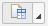
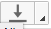
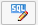
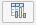

After modeling calculation views based on your requirements, deploy them within SAP HANA
modeler to preview and analyze the output data. You can also view the SQL query that modeler
generates for the deployed calculation view.
Context
Data preview refers to visualizing the output of calculation views in graphical or tabular
format. You can preview output of information views within SAP HANA modeler using
any of the following preview options:
- Preview raw data output and the SQL query
- Preview output in SAP BusinessObjects Design Studio
Procedure
-
Open the SAP HANA Web-based Development Workbench Editor.
The Web-based Editor tool is available on the SAP HANA XS Web server at the
following URL:
http://<WebServerHost>:80<SAPHANAinstance>/sap/hana/ide/editor.
-
Open the required calculation view in the view editor.
-
Preview raw data.
-
In the view editor menu bar, choose .
If you have not used any input parameters or variables, this
operation opens a new editor and displays the raw data output of all
attributes along with its data in a simple table format.
-
In the menu bar, choose the icon  dropdown.
-
Choose Open Content to view raw data
output.
-
Provide values to input parameters and variables.
If you have defined any variables or input parameters, provide your
values.
-
Apply filters.
-
If you want to apply filters and view filtered data, choose .
-
Choose Add Filters.
-
Choose a column and define filter conditions.
-
Export output data.
If you want to export the raw data output to a .csv file, choose .
-
View SQL query for the calculation view.
-
If you want to view the SQL query that modeler generates for the deployed calculation
view, choose .
-
If you want to modify the SQL query and view output accordingly, modify the query in SQL
console and choose to see output for the modified query.
-
Preview output in SAP BusinessObjects Design Studio.
Launch SAP BusinessObjects Design Studio, which is integrated within the SAP
HANA Web-based Development Workbench Editor to preview and analyze the
output of your calculation view.
-
In the view editor menu bar, choose .
This launches SAP BusinessObjects Design Studio in a new tab of your
browser.
Note
If there are inconsistencies in runtime information (that is, calculation
views in catalog or in tables related to runtime) of an calculation
view, you get invalidated view error. In such cases, you need to
redeploy the view in order to correct the inconsistencies of runtime
information.